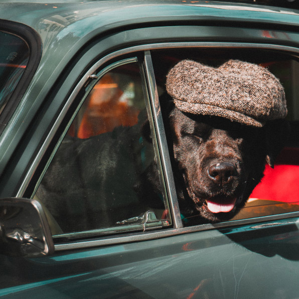
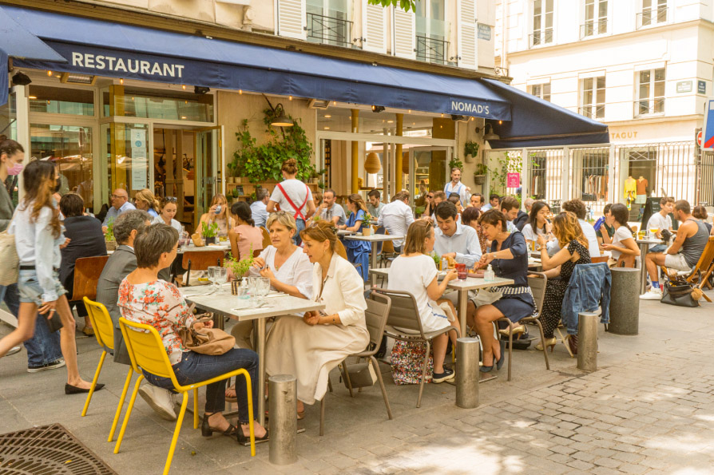
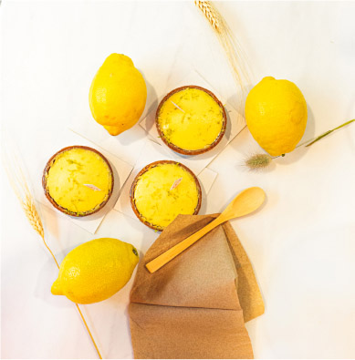
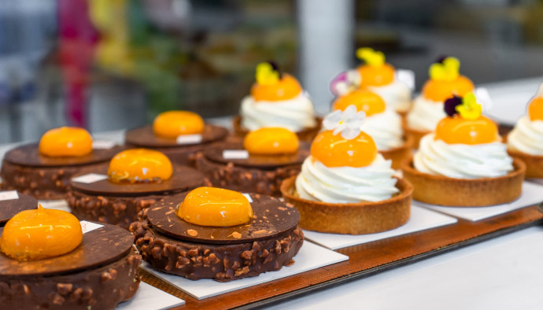
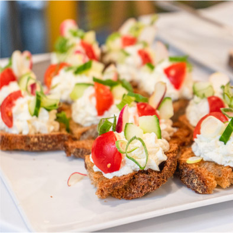
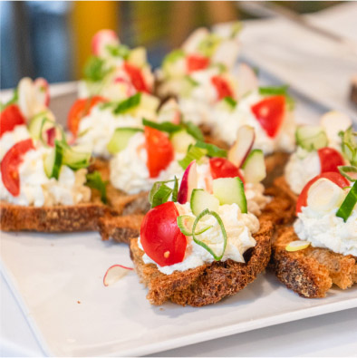
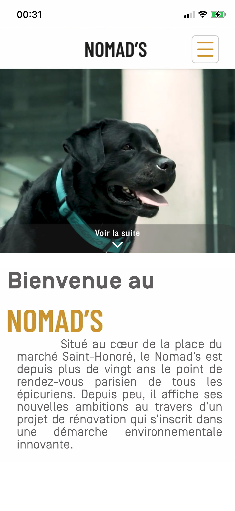

WEBDESIGN • PHOTOGRAPHIE • REALISATION VIDEO
Situé entre l'avenue de l'Opéra et le musée du Louvre, le Nomad's est le point de rendez-vous parisien de tous les épicuriens.
Durant ce stage de 2 mois j’ai réalisé une refonte complète de leur site internet ainsi qu’une vidéo et de multiples photos.




 

